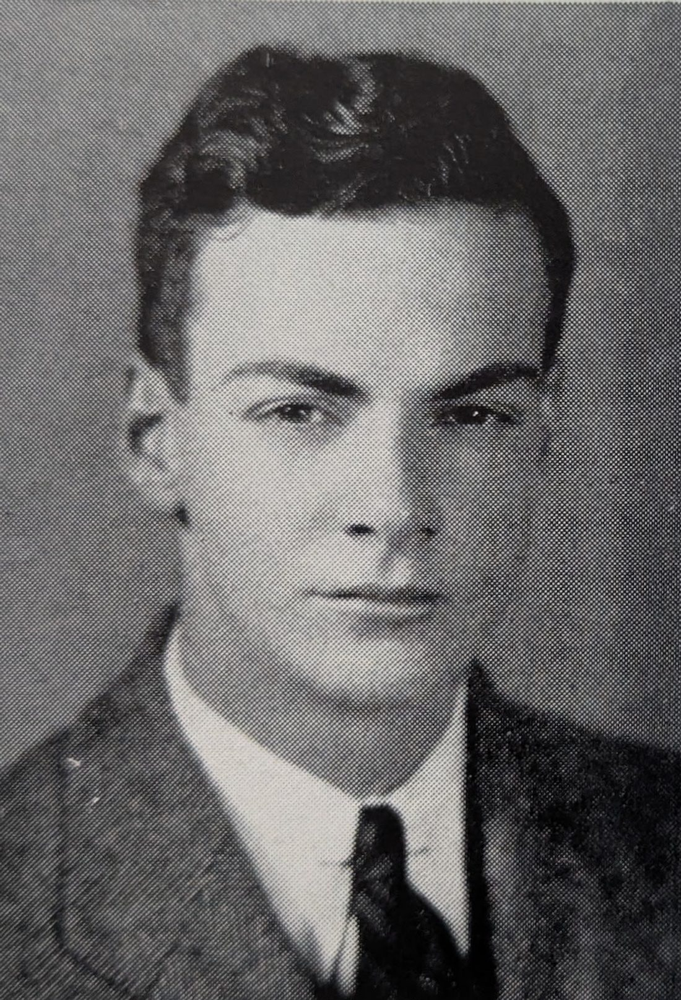
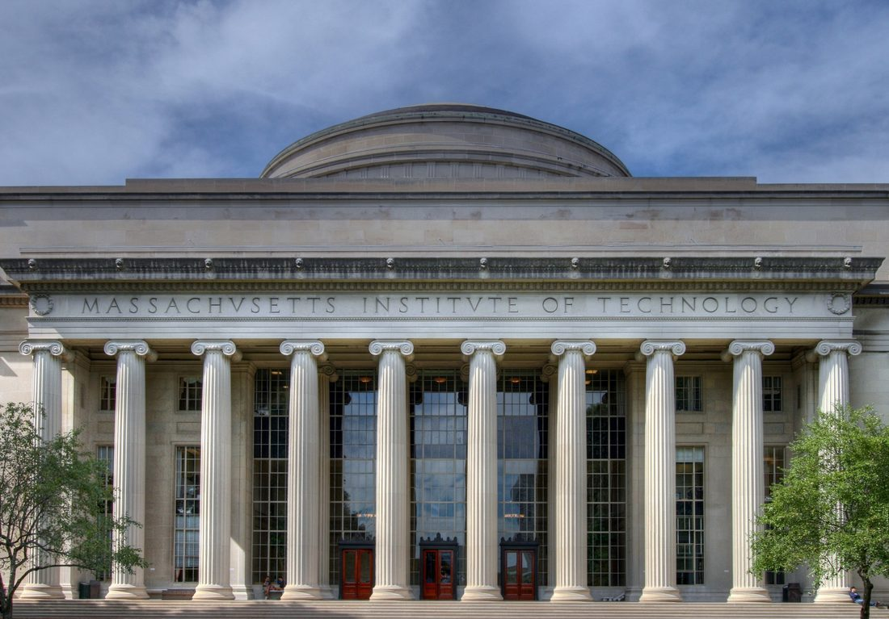
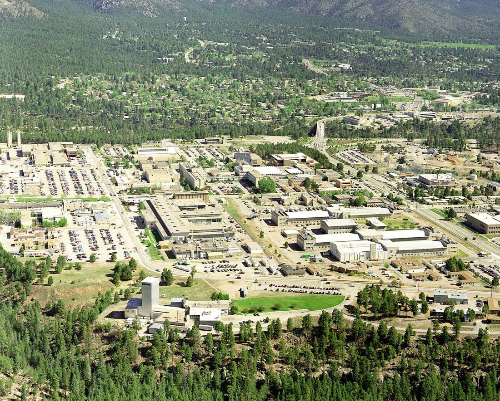
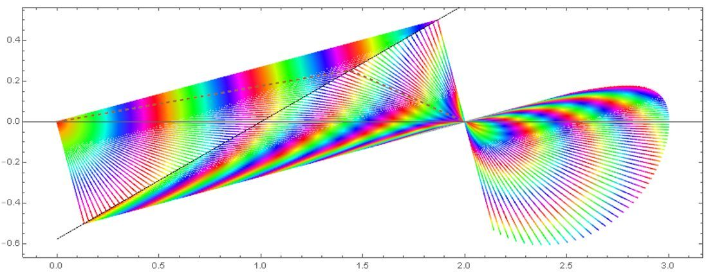
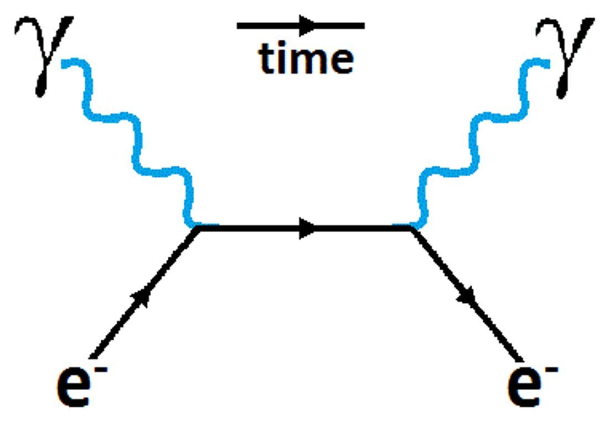
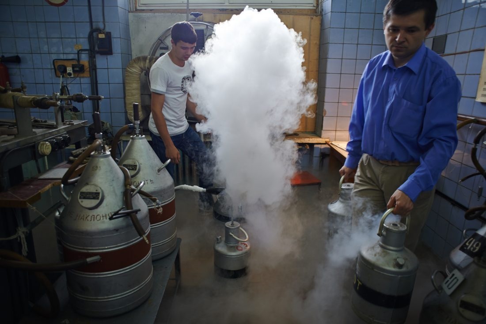
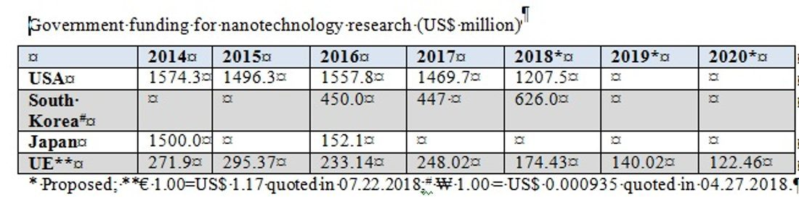
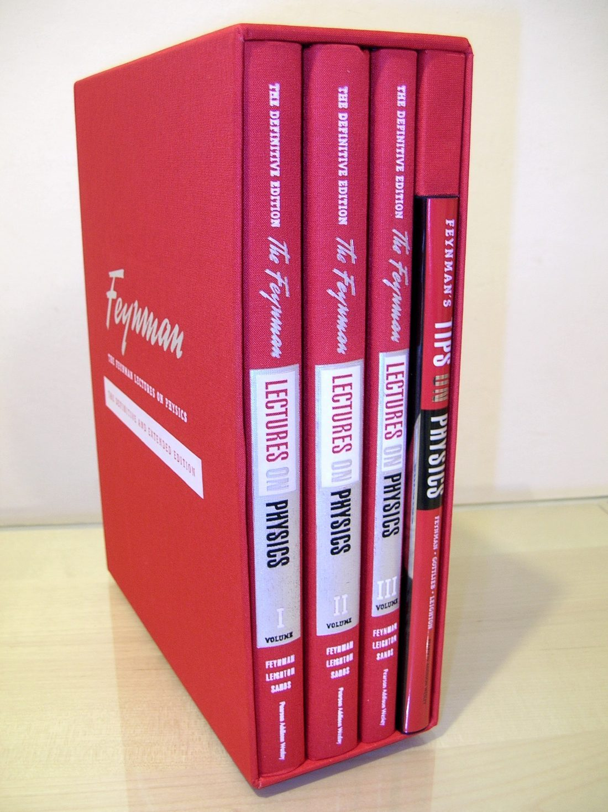
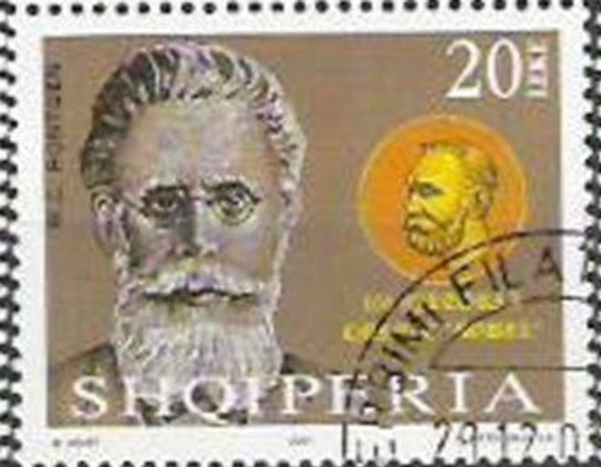
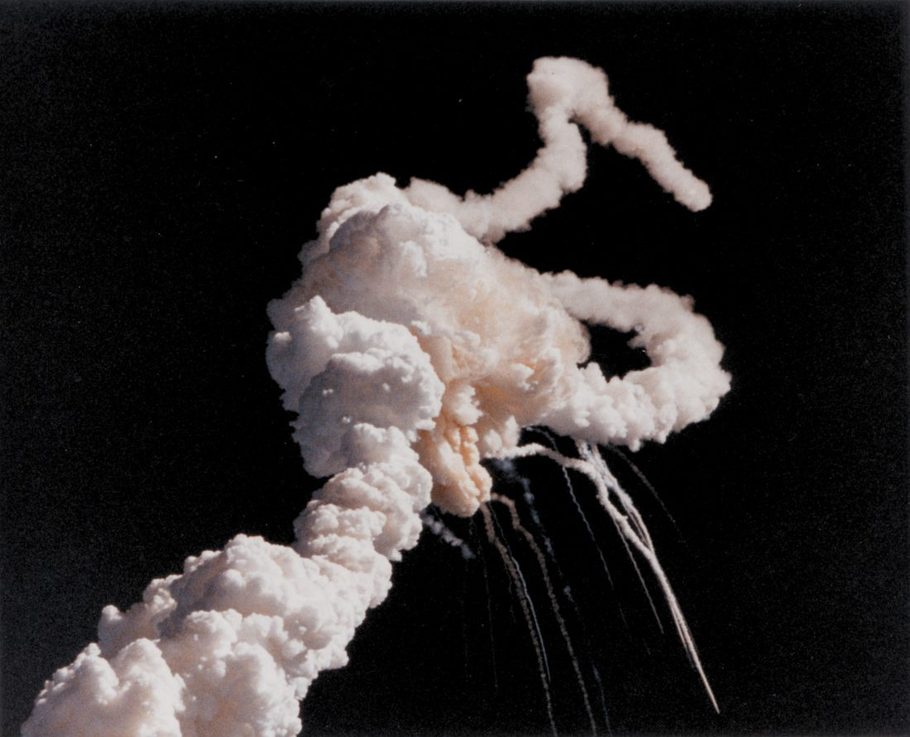

他在纽约皇后区长大，父亲很早就教他观察世界、追问“为什么”，而不是只记住名字。

他在 MIT 读完本科，随后到普林斯顿大学读研究生，师从惠勒研究量子力学。

还没拿到博士学位，他就被招募参与曼哈顿计划，在洛斯阿拉莫斯负责理论计算工作。

他提出量子力学的路径积分表述：概率幅是对所有可能路径的求和，与薛定谔方程等价。

他发表费曼图，把复杂的散射计算变成照图写式子的标准流程，很快被整个领域采纳。

他对液氦的超流现象给出微观解释，展示了量子力学在低温宏观系统中的威力。

他做了那场著名演讲，提出可以在原子尺度操纵物质，被视为纳米技术思想的源头。

他开始为加州理工的学生讲授整套基础物理，讲义后来整理成三卷本，成为传世名著。

他因量子电动力学的工作，与施温格、朝永振一郎共同获得诺贝尔物理学奖。

他参与挑战者号事故调查，用一杯冰水当众演示 O 形环在低温下失效，推动了事故原因的确认。
2 月 15 日，费曼因癌症并发症逝世，享年 69 岁。他留下的图与讲义，至今仍在使用。
读量子电动力学：光与电子怎么打交道 → 读路径积分：粒子把每一条路都走一遍 → 读费曼图：把一整页算式画成一张画 → 读讲台上的费曼：讲义、冰水与好奇心 →